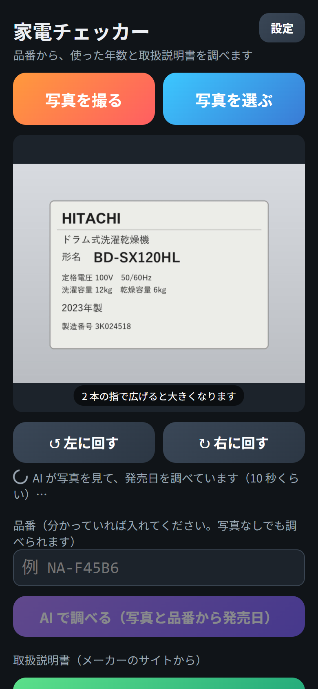
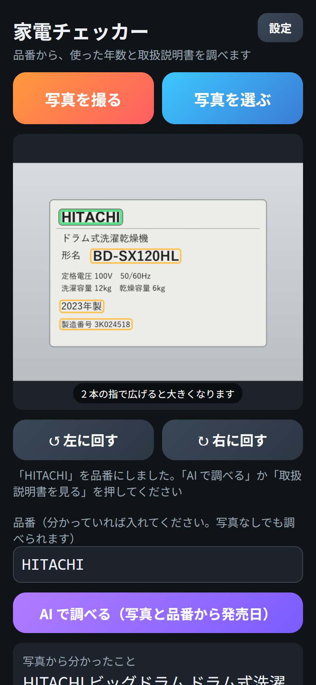
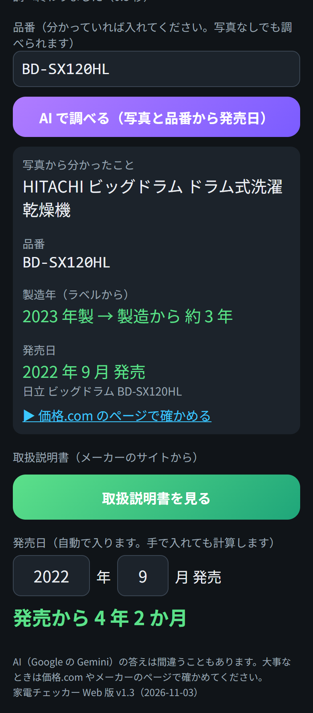
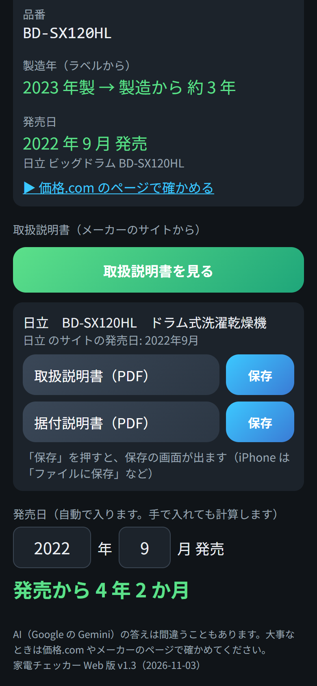

家電チェッカー Web 版 使い方マニュアル
（アプリの版: Web 版 v1.3 2026-11-03 作成）
家電チェッカー Web 版は、家電の品番のラベルの写真や品番から、
- その家電の発売日と、発売から何年たったか
- メーカーのサイトにある取扱説明書（PDF）
を調べるページです。iPhone・iPad・Android・パソコンのブラウザで使えます。
- 写真から字を読んだり発売日を探したりするのは、AI（Google の Gemini）です。
- 写真の中のラベルは、説明のために作った見本です。
もくじ
- ホーム画面に追加する
- はじめの設定（URL と合言葉）
- 写真から調べる
- 品番だけで調べる
- 取扱説明書を見る・保存する
- 発売日と使った年数
- 困ったときは
- 準備する人へ（スクリプトの用意）
1. ホーム画面に追加する
- iPhone（iPad）の Safari で、次の住所を開きます。
https://chocorin0000.github.io/kaden-checker/
- 画面の下（iPad は上）の共有のマーク（四角から上向きの矢印が出ている絵）を押します。
- 下へなぞって「ホーム画面に追加」→ 右上の「追加」。
- ホーム画面に、左上に赤い「web」の札がついたアイコンが出れば完了です。
- Android のスマホは、Chrome で同じ住所を開き「︙」→「ホーム画面に追加」。
- 新しい版が出たときは、アイコンから開き直すと自動で新しくなります。
- 電波がないときでもページは開きますが、調べるときはインターネットが要ります。
2. はじめの設定（URL と合言葉）
調べる処理は、Google のスクリプト（GAS）で動きます。使う前に、そのスクリプトの URL と合言葉を入れます。
URL と合言葉は、準備した人（家族など）に教えてもらってください。 自分で準備するときは「8.」を見てください。
- 右上の「設定」（または「設定する」）を押します。
- 「スクリプトの URL」に、
https://script.google.com/macros/s/…/exec の形の URL を入れて「OK」。
- URL は長いので、メールや LINE で送ってもらい、長押し →「コピー」して、入れる欄で長押し →「ペースト」すると楽です。
- 「合言葉」を入れて「OK」。
- 「設定しました。使えます」と出れば完了です。上の「はじめに『設定』で…」の囲みが消えます。
- 一度入れれば、次からは入れなくて大丈夫です（ホーム画面のアイコンを削除すると、入れ直しになります）。
3. 写真から調べる

写真を入れると、すぐ調べ始める
- 「写真を撮る」（カメラが開く）または「写真を選ぶ」（写真アプリから選ぶ）を押します。
- 家電の品番のラベルを撮ります。
- ラベルは、本体の横・後ろ・扉の内側・底などに貼ってあります。
- 近づいて、字がはっきり読めるように撮ってください。
- 写真が出ると、自動で AI が調べ始めます（10 秒くらい）。
- 調べ終わると、写真の中の読めた字に枠が出ます。
- 緑の枠: 品番として使っている字
- 黄色の枠: そのほかに読めた字（メーカー名・製造年など）
写真の操作
| すること |
やり方 |
| 大きくする |
写真の上で 2 本の指を広げる |
| 向きを直す |
「↺ 左に回す」「↻ 右に回す」 |
| カメラで撮った写真を残す |
「撮った写真を保存（写真アプリへ）」（カメラで撮ったときだけ出ます） |
品番がちがうとき（枠を押して選び直す）

「HITACHI」の枠を押したところ（品番の欄が変わる）
- 写真の中の枠を押すと、その字が「品番」の欄に入ります（押した枠が緑になります）。
- 品番を選び直したら、「AI で調べる」か「取扱説明書を見る」を押します。
- 上の写真はわざとメーカー名の枠を押した例です。正しい品番（ここでは BD-SX120HL）の枠を押してください。
調べた結果

結果（下へなぞったところ）
| 出るもの |
意味 |
| 写真から分かったこと |
メーカー・シリーズ・家電の種類 |
| 品番 |
発売日を調べた品番 |
| 製造年（ラベルから） |
ラベルに書いてある製造年と、製造から何年か |
| 発売日 |
価格.com で見つけた発売日と、商品の名前 |
| ▶ 価格.com のページで確かめる |
押すと、価格.com のページが開く |
AI の答えはまちがうこともあります。大事なときは「価格.com のページで確かめる」やメーカーのページで確かめてください。
4. 品番だけで調べる
写真がなくても、品番が分かっていれば調べられます。
- 「品番」の欄に品番を入れます（例:
NA-F45B6）。
- 大文字・小文字、ハイフン（-）のちがいは気にしなくて大丈夫です。
- 「AI で調べる（写真と品番から発売日）」を押します。
- 写真と品番の両方があるときは、両方を使って調べます。入れた品番を AI が読み直したときは「（入れた品番 ◯◯ を読み直しました）」と出ます。
5. 取扱説明書を見る・保存する

取扱説明書が見つかったところ
- 品番が入っている状態で「取扱説明書を見る」を押します。
- メーカーのサイトで探して、見つかった説明書が並びます（取扱説明書・据付説明書など）。
- 説明書の名前のボタンを押すと、PDF が開きます。
- 「保存」を押すと、保存の画面が出ます。iPhone は「"ファイル"に保存」を選びます。大きな PDF は「0%」から数字が増えて、用意ができると保存の画面になります。
- メーカーのサイトの発売日が分かったときは、「◯◯ のサイトの発売日: 2022年9月」と出ます（下の発売日の欄が空なら、自動で入ります）。
直接たどれるメーカー
- パナソニック・シャープ・日立・東芝・ソニー・象印は、メーカーのサイトから直接 PDF を探します。
- それ以外のメーカーや、見つからないときは「インターネットで探す」のボタンが出ます。押すと Google の検索が開くので、PDF をタップして開きます。
6. 発売日と使った年数
- 調べた発売日が「発売日」の欄（年・月）に自動で入り、その下に「発売から ◯ 年 ◯ か月」と出ます。
- 発売日が分かっているときは、自分で年と月を入れても計算します。月が分からないときは、年だけ入れると「発売から 約 ◯ 年」と出ます。
家電は、だいたい 7〜10 年くらいで買い替えを考える時期といわれます（メーカーが修理用の部品を持っている期間も、製造をやめてから 6〜9 年くらいのものが多いです）。買い替えや修理を考えるときの目安にしてください。
7. 困ったときは
| こんなとき |
どうする |
| 「はじめに『設定』で…」と出る |
「2.」の設定をする |
| 「URL の形が違うようです」 |
https://script.google.com/macros/s/ で始まり /exec で終わる URL を入れる |
| 「合言葉が違います」 |
準備した人に合言葉を確かめる（大文字・小文字、空白に注意） |
| 品番が読めない・ちがう品番になる |
ラベルに近づいて、明るいところで撮り直す。「↺ ↻」で向きを直す。枠を押して選び直す。品番を手で入れる |
| 「確かめられませんでした」 |
価格.com に出ていない古い家電などです。「取扱説明書を見る」でメーカーの発売日が分かることもあります |
| 「今日は 30 回使いました。明日また使えます」 |
使いすぎ防止のため、1 日に AI で調べられる回数を決めています（家族みんなで 30 回）。次の日にもう一度 |
| 「スクリプト プロパティに GEMINI_KEY がありません」 |
準備した人に知らせる（「8.」の手順 3） |
| ほかのエラーが出る |
少し待ってから、もう一度押す |
| 「PDF が大きすぎて、ここからは保存できません」 |
説明書の名前のボタンで PDF を開き、開いた画面の共有のマークから保存する |
| 上に「前に覚えた版で動いています」と出る |
電波がないか、ページのサーバーにつながらないときです。電波のよいところで開き直す |
| どの版か知りたい |
ページのいちばん下に「家電チェッカー Web 版 v1.3」のように出ています |
8. 準備する人へ（スクリプトの用意）
家族などに使ってもらうときは、1 人がスクリプトを用意し、URL と合言葉を教えます。スクリプトは、パソコンで用意するのがおすすめです。
用意するもの
- Google アカウント
- Gemini の API キー（Google AI Studio https://aistudio.google.com/ で無料で作れます）
- スクリプトの文（
Code.gs。作った人からもらう）
- 合言葉（家族だけに教えるもの）
手順
- パソコンで https://script.google.com/ を開き、「新しいプロジェクト」を作ります（名前は「家電チェッカー」など）。
- 最初からある文を全部消して、
Code.gs の文を貼り、保存します。
- 左の歯車（プロジェクトの設定）→ いちばん下の「スクリプト プロパティを追加」で、次の 2 つを足して「スクリプト プロパティを保存」。
| プロパティ |
値 |
| GEMINI_KEY |
Gemini の API キー |
| PASS |
合言葉 |
- 右上の「デプロイ」→「新しいデプロイ」→ 種類の歯車で「ウェブアプリ」→ 次のユーザーとして実行「自分」、アクセスできるユーザー「全員」→「デプロイ」。
- 「アクセスを承認」→ 自分のアカウント →「詳細」→「（安全ではないページ）に移動」→「許可」。
- 出てきたウェブアプリの URL（
/exec で終わるもの）と合言葉を、使う人に教えます。
- スクリプトの文を新しくしたときは、「デプロイ」→「デプロイを管理」→ 鉛筆 → バージョン「新バージョン」→「デプロイ」。URL は変わりません。
- API キーと合言葉はスクリプトの中にしまわれ、ページには出ません。API キーは人に教えないでください。